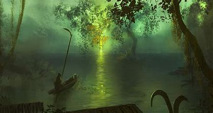

Terreno: El paisaje de Helheim es sombrío y desolado. Se describe como un lugar frío y oscuro, con vastas extensiones de tierra árida y montañas escarpadas. No es un lugar de tormento eterno como el infierno cristiano, sino más bien un reino gris y sin vida.
Atmósfera: La atmósfera en Helheim es fría y opresiva. La luz es tenue y difusa, creando un ambiente de penumbra perpetua. El aire está cargado de una sensación de melancolía y desesperanza, reflejando la naturaleza de las almas que residen allí.
Este río helado marca la frontera de Helheim. El puente Gjallarbrú, de oro brillante, lo cruza, y es custodiado por Modgud. El río simboliza la transición de la vida a la muerte y la separación del mundo de los vivos del reino de los muertos.
Es un manantial en Helheim del cual nacen varios ríos. Es un lugar central en la cosmología nórdica y está asociado con la creación y el origen de la vida y la muerte Su nombre significa "Caldera Burbujeante" o "Caldero Hirviente", reflejando su naturaleza activa y poderosa. Hvergelmir es una fuente crucial en la cosmología nórdica, conectada con la creación y el origen de varios ríos y la vida misma.
Durante el Ragnarök, el apocalipsis nórdico, Hvergelmir juega un papel en la renovación del mundo. Tras la destrucción, se cree que el manantial continuará existiendo, simbolizando la eterna fuente de vida y la posibilidad de un nuevo comienzo. Hvergelmir, por lo tanto, es un elemento de esperanza y continuidad en medio del caos y la destrucción.
Hel, la gobernante de Helheim, reside en un gran salón dentro de este reino. Su palacio se llama Eljudnir, que significa "Salón de las Tormentas" o "Lluvia de Dolores". Es un lugar vasto y oscuro, reflejando el dominio de Hel sobre los muertos.
El salón está decorado con tapices y artefactos que representan la vida y la muerte. Estos elementos no solo adornan el espacio, sino que también simbolizan el poder de Hel sobre el destino de las almas que llegan a su reino. El ambiente en Eljudnir es solemne y cargado de una sensación de inevitabilidad y resignación.
Eljudnir no es solo la residencia de Hel, sino también un lugar de juicio y encuentro. Aquí, Hel recibe a las almas de los muertos, determinando su destino final en el reino de Helheim. Además, el salón sirve como un espacio de reunión para los espíritus que buscan audiencia con la diosa de los muertos.
Náströnd, que significa "La Costa de los Cadáveres", es un lugar especialmente oscuro y temido dentro de Helheim. Se describe como una orilla sombría cubierta de serpientes venenosas. Las serpientes gotean veneno que forma ríos envenenados.
Este es el lugar donde las almas de los malhechores y perjurios sufren tormentos eternos. Las almas en Náströnd son castigadas de manera continua, reflejando los pecados y crímenes cometidos en vida. Es una representación del castigo y la justicia divina en la mitología nórdica.
La atmósfera en Náströnd es opresiva y cargada de sufrimiento. El veneno de las serpientes no solo representa el dolor físico, sino también la corrupción moral y la traición. Las descripciones de este lugar enfatizan la severidad de los castigos para aquellos que no vivieron de acuerdo con las normas éticas y sociales de la sociedad nórdica.
En resumen, Náströnd es una parte integral de Helheim que simboliza el lado más oscuro y punitivo del más allá. Su existencia subraya la importancia de la justicia y la retribución en la cosmología nórdica.